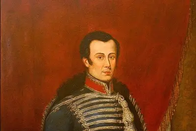

Libros, Trenes y leones:historia de la polemica ocupacion chilena de Lima
En enero de 1881-hace 140 años-,el Ejército chileno ocupó la capital de Perú con el fin de poner término a la gurra del Pacifico y l ograr la ansiada cesión de las ricas regiones salitreras. Asu llegada, los efectivos se encontraron con una ciudad agitada por desmares y tuvieron que encargarse de los asuntos doméesticos. La presencia chilena hasta hoy es objeto de debate,para algunos se produjeron saqueos, otros señalan que se tomaron botines de guerra. Historiadores chilenos y peruanos convocados por culto tratan el tema e ilustran los puntos a tener en cuenta en una discusión aún abierta..

Entrevistados a propósito del libro Saltar el torniquete (FCE, 2021) donde desliza que el "fraude" del neoliberalismo fue el "propulsor" del estallido social chileno, el sociólogo y académico de la Universidad de Chilee piensa que la voz de Los Prisioneros "instala la tesis sociológica de Améerica Latina de los últimos cuarenta años".

Un escape de la pelicula,vanguardia y Creacionismo: Vicente Huldobro, cuando crear es todo
Es uno de los nombres capitales de la poesía chilena, y a juicio de los entendidos, su literatura-entre poesía y prosa-presenta varios rasgos que lo hicieron dialogar con la plástica y las tendencias avanzadas de su tiempo. Incluso, se dio maña para patentar un movimiento, de origen disputado, donde abogaba por la creacion sin recurrir a la imitacion. En culto analizamos su escritura, estetita y actividad politica.
culto de Selección
Cuando Chile se partió en dos:Balmaceda, el salitre y el estallido de la Gerra Civil de 1891

Del casete al playlist: atrapando ell exito

George Harrison y la grabacion de All things must pass: el introspectivo camino a la trascendencia

Escupir canciones (y merca): Calamaro nadando las aguas de El Salmón

Pedro Pascal en el streaming: dónde ver el chileno del momento en Hollywood
